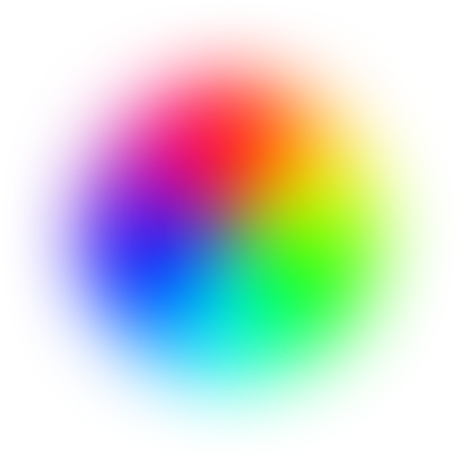

<!DOCTYPE html>
<html>
    <head>
        <meta charset="utf-8">
        <title>Orbit: HUEHUEHUE!</title>
        <link rel="stylesheet" href="css/pickr.css">
        <link rel="icon" type="images/png" href="favicon2.png">
    </head>
    <body>
        <script id="template" type="text/ractive">
            <div id="pickr"
                {{#if output.isLight}} class="dark" {{/if}}
                style="background: hsl({{hue}},{{saturation+'%'}},{{lightness+'%'}})">

                <div class="vertical-centerer">

                    <!-- HSL wheel -->

                    <div class="wheel">
                        
                        <div class="hue-guide"></div>
                        <div class="hue-wheel" style="transform: rotate({{hue}}deg)">
                            <div class="selector {{#if input.hue}}active{{/if}}"
                                {{#if input.hue}} style="background: hsl({{hue}}, 100%, 50%)" {{/if}}>
                            </div>
                        </div>
                        <div class="inner">
                            <ul class="properties">
                                <li>
                                    <span class="label">SATURATION</span>
                                    <div class="saturation slider">
                                        <div class="knob" style="{{#if input.sat}}background: hsl({{hue}}, {{saturation}}%, 50%); border: 2px solid;{{/if}} margin-left: {{saturation}}%" ></div>
                                    </div>
                                </li>
                                <li><div class="hex"><span>{{output.hex}}</span></div></li>
                                <li>
                                    <span class="label">LIGHTNESS</span>
                                    <div class="lightness slider">
                                        <div class="knob" style="{{#if input.light}}background: hsl({{hue}}, 0%, {{lightness}}%); border: 2px solid;{{/if}} margin-left: {{lightness}}%"></div>
                                    </div>
                                </li>

                            </ul>
                        </div>
                    </div> <!-- /wheel -->

                </div> <!-- /vertical-centerer -->

            </div> <!-- /pickr -->
        </script>

        <script src="bower_components/ractive/ractive.min.js"></script>
        <script src="bower_components/tinycolor/dist/tinycolor-min.js"></script>
        <script src="js/pickr.js"></script>
    </body>
</html>
